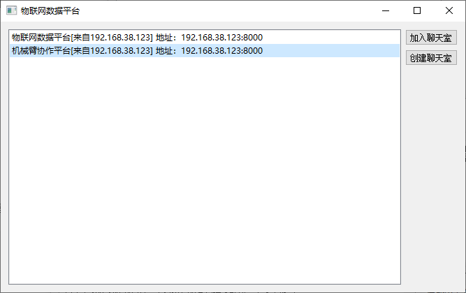
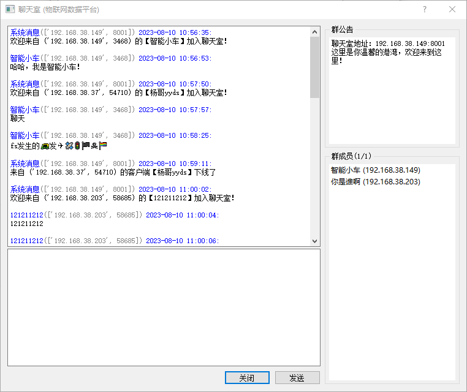
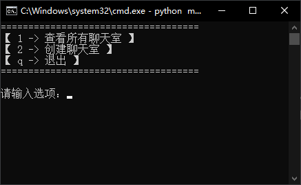
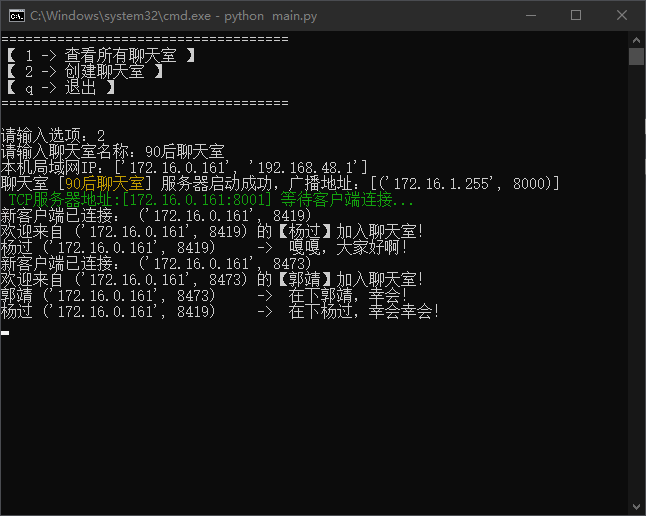
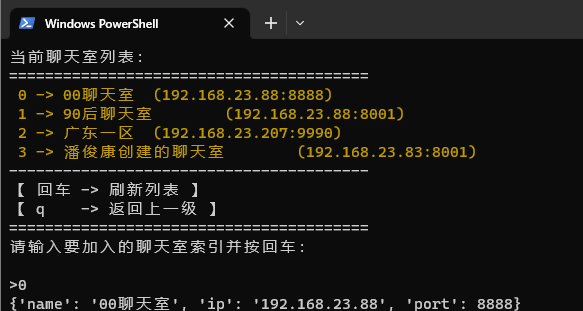
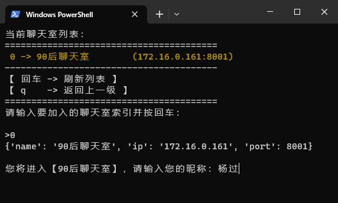
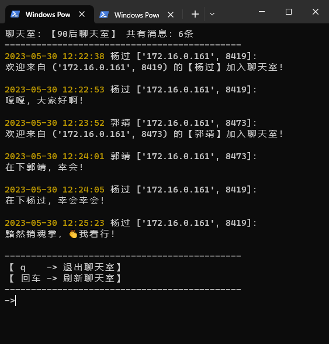

<!DOCTYPE lake>
<h1 data-lake-id="hVy5U" id="hVy5U"><span data-lake-id="u9c04b3f1" id="u9c04b3f1">GUI聊天室</span></h1><p data-lake-id="ud14735e3" id="ud14735e3"><br/></p><p data-lake-id="u0548201d" id="u0548201d"><strong><span data-lake-id="u09b804e3" id="u09b804e3">聊天室服务器</span></strong></p><ul list="u94df347f"><li data-lake-id="u7fbf08f4" fid="ue16866e8" id="u7fbf08f4"><span data-lake-id="uc5310b4a" id="uc5310b4a">单独通过控制台开启一个服务器，输入聊天室名称</span></li><li data-lake-id="ud040718d" fid="ue16866e8" id="ud040718d"><span data-lake-id="ub6d95698" id="ub6d95698">此服务器会定时（每2秒）往局域网所有设备的</span><code data-lake-id="u630054ad" id="u630054ad"><span data-lake-id="uc73f6efc" id="uc73f6efc">8000</span></code><span data-lake-id="u4addf10b" id="u4addf10b">发送UDP广播。</span></li><li data-lake-id="u8238c539" fid="ue16866e8" id="u8238c539"><span data-lake-id="uf8228e3f" id="uf8228e3f">通知内容是：自己开启的TCP服务器地址：</span><code data-lake-id="u36985277" id="u36985277"><span data-lake-id="u4a7118df" id="u4a7118df">192.168.38.149:8001</span></code></li><li data-lake-id="udccf2ba6" fid="ue16866e8" id="udccf2ba6"><span data-lake-id="ua3094432" id="ua3094432">接收所有客户端通过TCP的socket接入</span></li></ul><ul data-lake-indent="1" list="u94df347f"><li data-lake-id="u351d3530" fid="ue16866e8" id="u351d3530"><code data-lake-id="uac383b7b" id="uac383b7b"><span data-lake-id="u2422141f" id="u2422141f">Input</span></code><span data-lake-id="u64ce6fab" id="u64ce6fab"> 接收客户端发来的消息（存到历史记录）</span></li><li data-lake-id="ua8601588" fid="ue16866e8" id="ua8601588"><code data-lake-id="u1ef93bce" id="u1ef93bce"><span data-lake-id="u9a120826" id="u9a120826">Output</span></code><span data-lake-id="u81bee47e" id="u81bee47e">发送群通知、群成员列表给新进来的客户端</span></li><li data-lake-id="u41774fd0" fid="ue16866e8" id="u41774fd0"><code data-lake-id="u8fd4d48e" id="u8fd4d48e"><span data-lake-id="u87bb5057" id="u87bb5057">Output</span></code><span data-lake-id="u7ac66ca2" id="u7ac66ca2">把客户端发来的消息群发给其他所有客户端</span></li><li data-lake-id="u94bbec75" fid="ue16866e8" id="u94bbec75"><code data-lake-id="u9707602d" id="u9707602d"><span data-lake-id="uf1e6b842" id="uf1e6b842">Output</span></code><span data-lake-id="u327de8fc" id="u327de8fc">群成员列表变化时，把新的成员列表发给客户端</span></li></ul><p data-lake-id="u3a21671d" id="u3a21671d"><br/></p><p data-lake-id="u47c9e86c" id="u47c9e86c"><strong><span data-lake-id="u426468a8" id="u426468a8">聊天室客户端</span></strong></p><p data-lake-id="u81fdb4b9" id="u81fdb4b9"><span data-lake-id="u59cb509d" id="u59cb509d">聊天室列表</span></p><ul list="u646a0295"><li data-lake-id="ueecbbb4f" fid="u71d5da9a" id="ueecbbb4f"><span data-lake-id="u3e9220c5" id="u3e9220c5">接收局域网UDP广播：监听</span><code data-lake-id="u552a07f1" id="u552a07f1"><span data-lake-id="u2d542fac" id="u2d542fac">8000</span></code></li><li data-lake-id="uc7281392" fid="u71d5da9a" id="uc7281392"><span data-lake-id="u0fc55fc2" id="u0fc55fc2">将收到的服务器地址信息，根据发送者的</span><code data-lake-id="u365e2cca" id="u365e2cca"><span data-lake-id="u033ac497" id="u033ac497">ip:port</span></code><span data-lake-id="u7962b126" id="u7962b126">进行去重复</span></li><li data-lake-id="ucc64cc57" fid="u71d5da9a" id="ucc64cc57"><span data-lake-id="udb3b9d15" id="udb3b9d15">将去重复之后的数据显示在列表中</span></li></ul><p data-lake-id="u2247f3d8" id="u2247f3d8"><span data-lake-id="uf21f829c" id="uf21f829c">点击条目可以加入聊天室</span></p><ul list="ue69a6386"><li data-lake-id="u70521228" fid="uedaddfc2" id="u70521228"><code data-lake-id="uccb04f85" id="uccb04f85"><span data-lake-id="u14121e60" id="u14121e60">Input</span></code><span data-lake-id="ub528586a" id="ub528586a"> 在聊天室：接收群通知、接收群成员列表</span></li><li data-lake-id="u2ea4d6af" fid="uedaddfc2" id="u2ea4d6af"><code data-lake-id="u3ef3e71e" id="u3ef3e71e"><span data-lake-id="uc84a1c52" id="uc84a1c52">Input</span></code><span data-lake-id="u6a3621e6" id="u6a3621e6"> 接受并展示发来的聊天消息</span></li><li data-lake-id="ucf6b4d97" fid="uedaddfc2" id="ucf6b4d97"><code data-lake-id="ua0b8d80f" id="ua0b8d80f"><span data-lake-id="u7d947a38" id="u7d947a38">Output</span></code><span data-lake-id="u70e71d89" id="u70e71d89">获取用户输入的数据，发送给服务器</span></li></ul><p data-lake-id="ue2856e40" id="ue2856e40" style="text-indent: 2em"><br/></p><p data-lake-id="u82618fa4" id="u82618fa4"><br/></p><h2 data-lake-id="o8HAU" id="o8HAU"><span data-lake-id="u7c54f2c8" id="u7c54f2c8">聊天室列表</span></h2><p data-lake-id="ue3c35280" id="ue3c35280"></p><h3 data-lake-id="Y4AEu" id="Y4AEu"><span data-lake-id="uffbcf333" id="uffbcf333">获取列表</span></h3><p data-lake-id="u8a19a787" id="u8a19a787"><span data-lake-id="u52fdadd6" id="u52fdadd6">循环监听接收</span><code data-lake-id="u59416da3" id="u59416da3"><span data-lake-id="ub1261b1a" id="ub1261b1a">8000</span></code><span data-lake-id="uf4db97db" id="uf4db97db">端口的UDP广播，服务器会不断往外发送自己聊天室的信息：</span></p><span class="yuque-card-unsupported">[codeblock]</span><h2 data-lake-id="pytt2" id="pytt2"><span data-lake-id="ube1894fd" id="ube1894fd">聊天室对话框</span></h2><p data-lake-id="u27ad5cb7" id="u27ad5cb7"></p><p data-lake-id="u1dee9b2b" id="u1dee9b2b"><br/></p><h3 data-lake-id="KjKLE" id="KjKLE"><span data-lake-id="u8df69701" id="u8df69701">聊天记录</span></h3><p data-lake-id="ue28f35cc" id="ue28f35cc"><span data-lake-id="u3cce2e63" id="u3cce2e63">每次收到聊天记录时，直接把原来的 </span><code data-lake-id="u18a5bb53" id="u18a5bb53"><span data-lake-id="uc6188902" id="uc6188902">edit_recv</span></code><span data-lake-id="uc85cd038" id="uc85cd038"> 清空，一次性加入到</span><code data-lake-id="u01833388" id="u01833388"><span data-lake-id="u96058f80" id="u96058f80">edit_recv</span></code><span data-lake-id="u5bde7356" id="u5bde7356"> </span></p><span class="yuque-card-unsupported">[codeblock]</span><h3 data-lake-id="JZ5Qy" id="JZ5Qy"><span data-lake-id="u5c870b97" id="u5c870b97">新的消息</span></h3><p data-lake-id="ub5b18293" id="ub5b18293"><span data-lake-id="u1484904e" id="u1484904e">每收到一条新的消息，不需要清空</span><code data-lake-id="u194076fa" id="u194076fa"><span data-lake-id="u77b307d2" id="u77b307d2">edit_recv</span></code><span data-lake-id="u78047922" id="u78047922">，把新的数据追加到末尾</span></p><span class="yuque-card-unsupported">[codeblock]</span><h3 data-lake-id="gpxAt" id="gpxAt"><span data-lake-id="u0f444b37" id="u0f444b37">客户端列表</span></h3><p data-lake-id="u01c06c4d" id="u01c06c4d"><span data-lake-id="u45cbe16c" id="u45cbe16c">ListView：每次收到客户端列表，把</span><code data-lake-id="u1895cabb" id="u1895cabb"><span data-lake-id="ue2340123" id="ue2340123">lv_clients</span></code><span data-lake-id="ufd806ed0" id="ufd806ed0">列表内容清空，把新的数一次性加入到</span><code data-lake-id="u8abb7ecc" id="u8abb7ecc"><span data-lake-id="u2b38d1d9" id="u2b38d1d9">lv_clients</span></code></p><span class="yuque-card-unsupported">[codeblock]</span><h3 data-lake-id="GQfRv" id="GQfRv"><span data-lake-id="uf6c097fe" id="uf6c097fe">群公告</span></h3><p data-lake-id="u2fabb686" id="u2fabb686"><span data-lake-id="ud84321a6" id="ud84321a6">收到群公告后，直接替换到右上角</span><code data-lake-id="u6b5fcc82" id="u6b5fcc82"><span data-lake-id="uc36015d3" id="uc36015d3">edit_notify</span></code></p><span class="yuque-card-unsupported">[codeblock]</span><p data-lake-id="ub38bd331" id="ub38bd331"><span data-lake-id="ud3e98a7c" id="ud3e98a7c">完整版代码：</span></p><a class="yuque-card-link" href="https://www.yuque.com/attachments/yuque/0/2023/zip/27903758/1691658583259-ae7938c7-6b35-4783-979a-8d43b3cecdb7.zip">localdoc：实战开发04-多功能工具箱.zip</a><h1 data-lake-id="CJ9LE" id="CJ9LE"><span data-lake-id="ue27230a2" id="ue27230a2">Terminal版聊天室(了解)</span></h1><p data-lake-id="u95b4ab46" id="u95b4ab46"></p><h2 data-lake-id="OvnuP" id="OvnuP"><span data-lake-id="ubbcbdb6b" id="ubbcbdb6b">【服务器】创建聊天室</span></h2><h3 data-lake-id="zwoBZ" data-lake-index-type="2" id="zwoBZ"><span data-lake-id="u47a0d788" id="u47a0d788">准备好TCP服务器</span></h3><p data-lake-id="u87539673" id="u87539673"><span data-lake-id="u921944e1" id="u921944e1">在本地的</span><code data-lake-id="ue9eeadf6" id="ue9eeadf6"><span data-lake-id="ud1957a70" id="ud1957a70">8001</span></code><span data-lake-id="ua3db05d2" id="ua3db05d2">端口开启TCP服务器，等待别人的接入（通过线程能够处理多个客户端同时接入）</span></p><h3 data-lake-id="GA82y" data-lake-index-type="2" id="GA82y"><span data-lake-id="u5216dee6" id="u5216dee6">发广播通知所有人</span></h3><ol list="u595b201f"><li data-lake-id="ud9e1c727" fid="ue97c7bba" id="ud9e1c727"><span data-lake-id="u28f2780b" id="u28f2780b">在一开始就开启子线程专门循环发广播。</span></li><li data-lake-id="u7d78dbb1" fid="ue97c7bba" id="u7d78dbb1"><span data-lake-id="u1d748328" id="u1d748328">通过UDP广播（</span><code data-lake-id="u3ea1e363" id="u3ea1e363"><span data-lake-id="u3eb03aed" id="u3eb03aed">192.168.23.255</span></code><span data-lake-id="ud6fb82da" id="ud6fb82da">）所有电脑的</span><code data-lake-id="u6c61b9b0" id="u6c61b9b0"><span data-lake-id="uc9042743" id="uc9042743">8000</span></code><span data-lake-id="u14bc2d35" id="u14bc2d35">端口（每隔2秒）</span></li><li data-lake-id="uaccee8dc" fid="ue97c7bba" id="uaccee8dc"><span data-lake-id="u4dbe1912" id="u4dbe1912">广播内容是：自己聊天室的名称、IP地址、端口号：</span></li></ol><span class="yuque-card-unsupported">[codeblock]</span><ol list="u18b69731" start="4"><li data-lake-id="ub2a80b78" fid="ud6d9a966" id="ub2a80b78"><span data-lake-id="u13c598f2" id="u13c598f2">通过如下形式将python类型的数据转成字符串：</span></li></ol><span class="yuque-card-unsupported">[codeblock]</span><blockquote class="lake-alert lake-alert-warning" data-lake-id="udbf56b7e" id="udbf56b7e"><p data-lake-id="ueeaae647" id="ueeaae647"><span data-lake-id="u064ce637" id="u064ce637">服务器端口号可以任意指定，广播的目标端口号统一使用</span><code data-lake-id="ud413052d" id="ud413052d"><span data-lake-id="ua71bb4eb" id="ua71bb4eb">8000</span></code></p></blockquote><h3 data-lake-id="NAtid" data-lake-index-type="2" id="NAtid"><span data-lake-id="u13775c0f" id="u13775c0f">处理连进来的客户端</span></h3><p data-lake-id="u60a4bc89" id="u60a4bc89"><span data-lake-id="ub2cd915f" id="ub2cd915f">一旦有客户单连进来，做以下事情：</span></p><ol list="u523d6198"><li data-lake-id="u395a5935" fid="u0ee11e3b" id="u395a5935"><span data-lake-id="u89a98ea0" id="u89a98ea0">接收客户端发来的第一条消息，把消息内容作为其昵称</span><code data-lake-id="u577e8b27" id="u577e8b27"><span data-lake-id="udf0bcb64" id="udf0bcb64">nickname</span></code></li><li data-lake-id="u08680f88" fid="u0ee11e3b" id="u08680f88"><span data-lake-id="u3a014701" id="u3a014701">将这个客户端保存到一个列表里</span><code data-lake-id="udb6cb1e6" id="udb6cb1e6"><span data-lake-id="ucbb5cac6" id="ucbb5cac6">client_list</span></code></li></ol><span class="yuque-card-unsupported">[codeblock]</span><ol list="u523d6198" start="3"><li data-lake-id="u33acdf18" fid="u0ee11e3b" id="u33acdf18"><span data-lake-id="ub30e8e99" id="ub30e8e99">把最近N条（10）聊天记录发给这个新的客户端，格式如下：</span></li></ol><span class="yuque-card-unsupported">[codeblock]</span><p data-lake-id="u235096c3" id="u235096c3"><br/></p><p data-lake-id="u8604937b" id="u8604937b"><span data-lake-id="ud954633a" id="ud954633a">如果有人发消息，则服务器负责把消息群发给所有的客户端</span><code data-lake-id="u4be27998" id="u4be27998"><span data-lake-id="ua487b278" id="ua487b278">client_list</span></code></p><p data-lake-id="ue3f4bdfd" id="ue3f4bdfd"><br/></p><p data-lake-id="u67099c6b" id="u67099c6b"></p><p data-lake-id="ucdea1363" id="ucdea1363"><br/></p><h2 data-lake-id="ggkL4" id="ggkL4"><span data-lake-id="u2a641fc9" id="u2a641fc9">【扫描器】扫描局域网服务器</span></h2><p data-lake-id="u81a6f8e5" id="u81a6f8e5"><span data-lake-id="u09dc57a8" id="u09dc57a8">使用UDP广播接收器，循环监听</span><code data-lake-id="ub3558dfd" id="ub3558dfd"><span data-lake-id="u89fbc66a" id="u89fbc66a">8000</span></code><span data-lake-id="u37b8ce54" id="u37b8ce54">端口。</span></p><p data-lake-id="ud9f33f7b" id="ud9f33f7b"></p><p data-lake-id="u41eaad9f" id="u41eaad9f"><span data-lake-id="u6b666032" id="u6b666032">建议使用字典dict接收保存所有的聊天室（key：</span><code data-lake-id="ue9d919ea" id="ue9d919ea"><span data-lake-id="ue8a4d089" id="ue8a4d089">192.168.23.88:8001</span></code><span data-lake-id="u5407fbef" id="u5407fbef">以发送者的IP和port组合为Key）,以广播的内容解析出的字段对象作为value。（value的内容应包含name,ip,port信息）</span></p><p data-lake-id="u0524fd75" id="u0524fd75"><span data-lake-id="u7201fbcf" id="u7201fbcf">​</span><br/></p><p data-lake-id="u41d1dc39" id="u41d1dc39"><span data-lake-id="u7f854737" id="u7f854737">​</span><br/></p><h2 data-lake-id="vR4ei" id="vR4ei"><span data-lake-id="uebba49e7" id="uebba49e7">【客户端】加入聊天室</span></h2><h3 data-lake-id="f4IP1" data-lake-index-type="2" id="f4IP1"><span data-lake-id="u4a7a2675" id="u4a7a2675">将自己的昵称发给服务器</span></h3><span class="yuque-card-unsupported">[codeblock]</span><h3 data-lake-id="tvg5Z" data-lake-index-type="2" id="tvg5Z"><span data-lake-id="u93b8b0ab" id="u93b8b0ab">解析服务器发来的聊天记录</span></h3><p data-lake-id="u7069c231" id="u7069c231"><span data-lake-id="ude28e986" id="ude28e986">解析服务器的聊天记录，将解码后的字符串</span><code data-lake-id="ue5112f9a" id="ue5112f9a"><span data-lake-id="u75be628b" id="u75be628b">recv_msgs</span></code><span data-lake-id="uedabd14b" id="uedabd14b">进行解析：</span></p><span class="yuque-card-unsupported">[codeblock]</span><p data-lake-id="u4949ee3a" id="u4949ee3a"></p><p data-lake-id="uee6119c1" id="uee6119c1"><span data-lake-id="uf3b18baa" id="uf3b18baa">客户端清屏代码：</span></p><span class="yuque-card-unsupported">[codeblock]</span><h3 data-lake-id="KUBRs" data-lake-index-type="2" id="KUBRs"><span data-lake-id="u6804fafb" id="u6804fafb">聊天室示例</span></h3><p data-lake-id="u57add6f3" id="u57add6f3"></p><p data-lake-id="ua1b21429" id="ua1b21429"><br/></p><p data-lake-id="ubaa45d59" id="ubaa45d59"><br/></p><h2 data-lake-id="wWtKz" id="wWtKz"><span data-lake-id="u2ca059f5" id="u2ca059f5">其他小技巧</span></h2><p data-lake-id="u6bb3e6c8" id="u6bb3e6c8"><span data-lake-id="u21b7d1aa" id="u21b7d1aa">获取所有本机IP：</span></p><span class="yuque-card-unsupported">[codeblock]</span><p data-lake-id="u6e01d5a3" id="u6e01d5a3"><span data-lake-id="u2c8aa5f6" id="u2c8aa5f6">好用小工具：</span></p><span class="yuque-card-unsupported">[codeblock]</span>